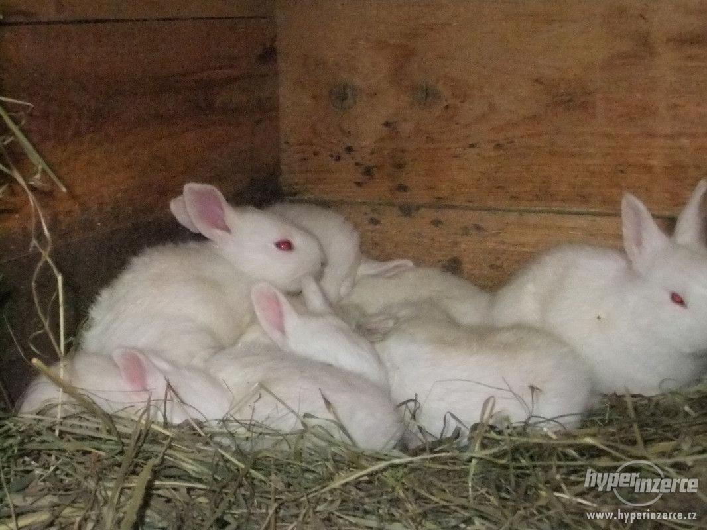

Ve velkochovech jsou v ČR králíci chovaní hlavně pro maso; spotřeba králičího masa na obyvatele a rok činí 2,7–3,0 kg. Drobnochovatelé chovají pro vlastní potřebu – nabídka králičího masa v obchodech pochází z velkochovů bíle pigmentovaných broilerových králíků
Brojleroví králíci jsou hybridi šlechtění speciálně na ranost, výbornou zmasilost a kvalitu masa, důležitá je také intenzita růstu a konverze krmiva. Ve velkochovech jsou králíci chováni v uzavřených klimatizovaných halách, způsob chovu je uzavřený klecový. Králice jsou intenzivně využívané a dávají 6–8 vrhů za rok. Krmí se výhradně granulovanou krmnou směsí
Kůže brojlerových králíků se používá k výrobě plsti. Pro produkci kožešin jsou chována rexová plemena králíků, pro produkci vlny pak angorská plemena.
